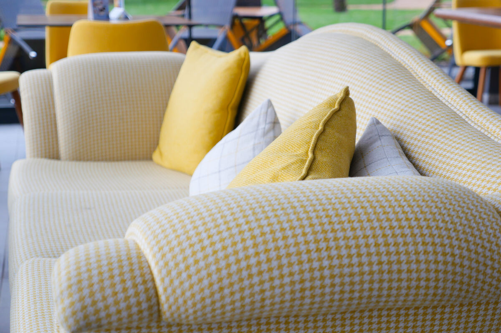

Serviço
Reforma de sofá em São Paulo
Reforma de sofá de alto padrão em São Paulo: tecidos nobres, espumas de performance e acabamento de ateliê.
A reforma de sofá em São Paulo da InovArt vai além de trocar o tecido. Avaliamos estrutura, densidades de espuma, percintas, molas e o mecanismo — quando há — para devolver conforto e aparência sem descartar uma peça que ainda tem vida útil, valor sentimental ou medida especial.
Atendemos sofá fixo, sofá retrátil e sofá reclinável, do living ao home theater. O trabalho acontece no ateliê do Parque Mandaqui, com curadoria de tecidos (linho, jacquard, couro e blends técnicos) e acabamento alinhado a projetos residenciais e de arquitetura em Alphaville, Jardins, Morumbi, Itaim e demais regiões premium.
Para quem é este serviço
Ideal quando o sofá afundou, o revestimento manchou ou rasgou, o padrão de uso mudou (pets, crianças) ou você quer atualizar a estética sem comprar um modelo genérico. Também faz sentido em peças assinadas e medidas sob encomenda que o mercado pronto não substitui com facilidade.
Como funciona a reforma
- Avaliação — analisamos a peça no local ou no ateliê (fotos pelo WhatsApp aceleram o primeiro diagnóstico).
- Proposta — tecido, espuma, reforços estruturais e prazo com orçamento transparente.
- Execução — tapeçaria artesanal no ateliê, com remates, alinhamento de padrões e revisão de conforto.
- Entrega — devolução ou instalação no ambiente; verifique condições especiais de logística.
Perguntas frequentes
Quanto custa reformar um sofá em São Paulo?
O valor depende do modelo, estado da estrutura, tecido e acabamento. Após avaliar a peça, enviamos orçamento transparente pelo WhatsApp.
Vocês reformam sofá retrátil e reclinável?
Sim. Revisamos mecanismo, espumas e revestimento de sofás retráteis e reclináveis, com acabamento alinhado ao uso diário.
Vale a pena reformar em vez de comprar outro?
Sim, quando a estrutura está boa ou a peça tem valor sentimental, de design ou medida especial. A reforma preserva o que importa e renova conforto e aparência.
Vocês retiram e entregam o sofá?
Sim. Podemos retirar no local, reformar no ateliê e devolver — ou receber a peça no Parque Mandaqui. Verifique condições especiais conforme região e acesso.
Conte o desafio do seu projeto — do conserto pontual à peça sob encomenda. Envie fotos e receba orientação pelo WhatsApp.
Pedir orçamento no WhatsApp